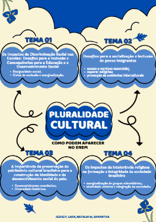

Temas para redação do enem
Pluralidade Cultural

Tema 1: Os Impactos da Discriminação Racial nas Escolas: Desafios para a Inclusão e Consequências para a Educação e o Desenvolvimento Social
Argumento histórico:
A discriminação racial nas escolas tem raízes profundas na história do Brasil, marcada pela escravidão e pela exclusão sistemática de negros da educação. Mesmo após a abolição, as barreiras para o acesso de estudantes negros a uma educação de qualidade persistiram, refletindo uma desigualdade histórica. Esse contexto impacta diretamente o desempenho acadêmico e o desenvolvimento social dos estudantes, perpetuando ciclos de exclusão e marginalização. Portanto, a superação dessa discriminação é essencial para garantir uma educação inclusiva e igualitária para todos.
Argumento de autoridade:
A discriminação racial nas escolas tem sérios impactos na inclusão e no desenvolvimento dos estudantes, especialmente os negros. Segundo a socióloga **Djamila Ribeiro**, essa desigualdade reflete um sistema que historicamente marginalizou as populações negras, afetando seu desempenho acadêmico e autoestima. Em seu livro *"O que é Lugar de Fala?"*, ela destaca que a discriminação nas escolas perpetua as desigualdades sociais, dificultando a construção de uma sociedade mais justa e igualitária. Superar essa exclusão é essencial para garantir uma educação inclusiva e promover a equidade social.
Tema 2: Desafios para a socialização e inclusão de povos imigrantes
Argumento de autoridade:
A inclusão de povos imigrantes enfrenta desafios estruturais e culturais, como o acesso a serviços essenciais e o preconceito social. Especialistas como Silvia Ribeiro e Marco Antônio Moreira destacam que, além da adaptação à língua e aos costumes, é preciso superar estigmas e promover um ambiente intercultural. A psicóloga Maria Cristina Silva alerta que a exclusão pode gerar marginalização, reforçando a segregação. Portanto, é necessário mudar atitudes culturais e implementar políticas públicas eficazes para uma convivência mais inclusiva e harmoniosa.
Argumento por raciocínio lógico:
A socialização e inclusão de imigrantes enfrentam desafios como barreiras linguísticas, preconceito e a falta de acesso a oportunidades no mercado de trabalho, o que contribui para a marginalização desses grupos. A resistência social, alimentada por estigmas e xenofobia, dificulta a convivência intercultural e impede uma integração plena. Para superar esses obstáculos, é essencial implementar políticas públicas que garantam acesso a serviços, como educação e saúde, e promover iniciativas que incentivem a aceitação das diferenças culturais. Além disso, a educação e a conscientização sobre diversidade são fundamentais para mudar atitudes sociais e criar um ambiente mais inclusivo e igualitário.
Tema 3: A importância da preservação do patrimônio cultural brasileiro para a construção da identidade e do desenvolvimento social do país.
Argumento de causa e consequência:
A preservação do patrimônio cultural brasileiro é essencial para manter a identidade nacional, fomentar o desenvolvimento econômico por meio do turismo e promover a coesão social. A falta de proteção resulta na perda de conexão com a história, prejuízos econômicos e exclusão social, enfraquecendo o país como um todo. Assim, investir na preservação é fundamental para um Brasil mais justo e sustentável.
Argumento histórico:
A preservação do patrimônio cultural brasileiro é essencial para a identidade nacional, pois reflete a diversidade histórica do país, formada por influências indígenas, africanas e europeias. A destruição de bens culturais, como o incêndio no Museu Nacional em 2018, causa perdas irreparáveis, comprometendo a conexão das gerações futuras com suas raízes. Sem a preservação, o país perde a base para construir uma sociedade coesa e bem-sucedida, dificultando o desenvolvimento social e o fortalecimento do sentimento de pertencimento.
Tema 4: Os impactos da intolerância religiosa na formação e integridade da sociedade brasileira
Argumento de exemplificação:
Ataques a terreiros de candomblé exemplificam como a intolerância religiosa afeta negativamente a sociedade brasileira, gerando violência, medo e exclusão. Esses atos comprometem a liberdade de crença, enfraquecem a convivência pacífica e dificultam a construção de uma sociedade democrática e plural.:
A intolerância religiosa se assemelha ao racismo por também marginalizar grupos minoritários e dividir a sociedade. Ambas geram exclusão, tensões sociais e dificultam a construção de um ambiente inclusivo, afetando principalmente religiões de matriz africana e prejudicando a coesão social.